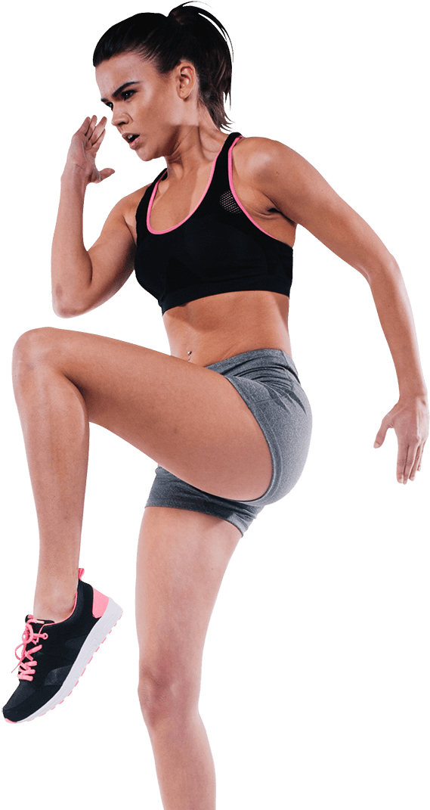

Welcome to our FITNESS site
About Us
Our gymnasium, also known as a gym, is a covered location for athletics.Benefits of gyms are numerous as it helps to increase the cardiovascular fitness, stronger muscles, better mood, better brain function, stronger bones, more flexibility, increased longevity, decreased weight, decreased risk of many cancers and improved appearance.
DANCE
Dancing bolsters physical and mental health by helping to prevent falls, improve posture and flexibility, lift mood and ease anxiety.
VIEW-DETAILS

GYM
A gym session or brisk walk can help. Physical activity stimulates various brain chemicals that may leave you feeling happier, more relaxed and less anxious.
VIEW-DETAILS

YOGA
Yoga offers physical and mental health benefits for people of all ages.Yoga can become an integral part of your treatment and potentially hasten healing.
VIEW-DETAILS